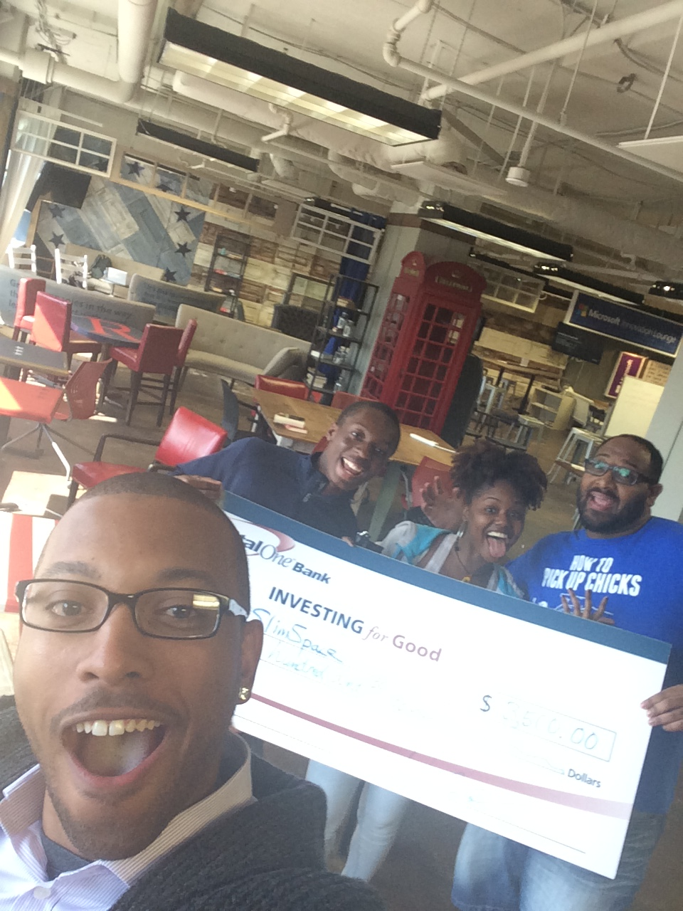

Fifth Hackathon. Second AngelHack.
This weekend I have decided to take on the challenge again to enter a hackathon competition hosted by Capital One and Angel Hack. This is my first time going to a Capital One Hackathon, second time to an AngelHack Hackathon and fifth time entering a hackathon. From each experience I have improve on my technical skills and learned something new. The last hackathon I was a part of was Pearl Hacks that took place in Chapel Hill, Nort Carolina on UNC campus. At this hackathon I had finally masted the art of implementing one of the popular image uploading gems, Carrierwave with one of the top cloud hosting services Amazon Web Service. Unforuntately I was not able to enter my project into the competition but I looked at the experience as an opportunity to network with people who was interested in technology and made everlasting relationships.
AngelHack was my very first hackathon that I attended. I came as a spectator to figure out what type of things people did and what other things that I can learn from them. So now coming to this event as a contributor is a truly a great marker of how far I have came along with my technical skills. At this event I will be a Developer with a background in Web Design and Ruby on Rails. What I hope to gain from this experience is of course expanding my professional network but also learn how to implement two new gems and use an API to help deliver the team's idea.
I swear it was like the most interesting turn of events at this hackathon. I arrive during the Capital One's presentation on the core issues that small businesses faced. What I took from that presentation was that the main focus that small business owners has was to enhance their product or service 24/7 of the week and 365 days of the year. That means that any task that deviates from progressing the core business is a setback. Those factors that Capital One named were administrative, financial and managerial duties. When I first saw that I thought marketing woes would also be a factor but since the invention of social media that is no longer the case. In so along with that they introduced one of their new tools that stemed from their Spark services platform and offered for us to use their API to incorporate into our project.
I am not too skilled with using API's in Ruby on Rails project so I thought to myself maybe this day will be it! But then the issue was that I didn't have an idea in mind for this hackathon and I felt that I was underqualified to help othe people who needed developers. From what I heard in the pitches, they were mainly looking for individuals who were proficient with dealing with APIs and used Angular.JS or any Javascript related framework. In so, I ended up joining my classmate Ricardo and Simeon.
Simeon is currently a Sophomore at Howard University studying Computer Information System. I met Simeon when I was either in my last year at Howard University. I can't remember clearly the details on how we met but I promise you it had to be through our professor. In the past I only worked on one project with him which was for DC StartUp weekend. We created an web application called Edumatter. It was dedicated towards creating a better platform for high school students to organize their information on potential colleges and scholarships. We did everything by using Ruby on Rails. I promise you he is a genius when it comes to Ruby on Rails, CSS, HTML, Javascript and Java! Matter of fact practically everything in tech he is a genuis and he is absolutely fun and great to work with!


Ricardo is a 2014 graduate of Howard University and is currently a Database Manager for Bank of America. I met Ricardo in the summer of 2013 when I was on my way to School of Business, little did I know I was going to be his TA for one the programming classes in the semester after next. I have been on several projects with Ricardo. The latest was in our System Analysis & Design class. Our end project was to revamp Howard University's "Class Registration" system. He did an excellent job creating the database using PHP, HTML and CSS to design it. It was huge eye-opener working with him on these type of projects because he had a strong skill set in keeping everything simple and perfect. I learned a lot from his ways of organizing information. He is pretty much our "Database Guru."
In so, once I linked up with them we spent about 6 hours braindstorming what product we can create. Some ideas were creating a platform that would address the needs of small business owners (Finances, Management and Administration), create a repository that connects them to future business associates or clients (Similar to Angie's List) or just do something that nobody in the room was going to do. And then from there a very interesting idea had arise. Let us create a platform for individuals to rent out small work-related spaces to their door at any time of the day, almost like Cove or ImpactHub one of the popular coworking spaces in the DC area except it can simply be a small business that have an space to rent out at interesting times of the day.
For the rest of the evening and night, we worked on the idea using Ruby on Rails to create the web application. As we were creating our application we had only about two goals in mind:
I felt like in my five times of participating in events like this the main goal is to have the key feature of the product to work and be able to communicate your idea to the judges/audience to the point that it is very appealing or something I would like to call "Where do I sign up for this product/service?" mindset. On Sunday morning about 66% of the the team was tired and we did as much as we can to the web application. Hours before presenting it to the official judges we asked a few business owners who were around if they can listen to our pitch and give us some pointers that we should improve on. That hepled us a great deal because we were able to give a clear path to describing who our target audience would be. When it came time to pitch our idea it was just straight and simple to the point.
At the end they only asked about three questions:
Once our presentation was done and judges went to another room to debate on who should be a winner there was a sigh of relief within us. In so as a way to wire down our brains and focus on something else we all started to play an online game called Warlight. Its basically the old time military strategy game "Risk." It is surprisingly addictive and very fun!
After several minutes of deliberation the judges came back with the results and to our surprise..........................
The prize was $3500 cash prize, 12 free weeks of coworking space from ImpactHub, entrance into AngelHack's "HackAccelerator" Program and a trip to San Franscisco to pitch our idea to potential angel investors. Pretty neat right??! We are very excited about this amazing opportunity and can't wait to get started in actually creating a "StartUp."
That's Joey by the way ^